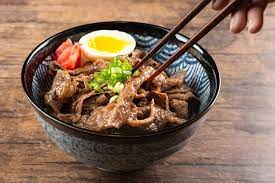

Gyudon

Description
Ingredients
- 200g of thinly sliced beef
- 300g of cooked rice
- 1 Onion
- 140ml of water
- 100ml of mirin
- 60 ml of soy sauce
Steps
- Wash the rice thoroughly and use a rice cooker
- Add all liquid ingiredients together to create a dashi stock, then pour it into a pan
- Heat up the dashi with medium heat and wait until it boils
- Add 1 whole thinly sliced onion as well as the beef portion, let it sit until everything is cooked
- Adjust cooking time as desired. Until finished, serve in a bowl with the beef mixture.